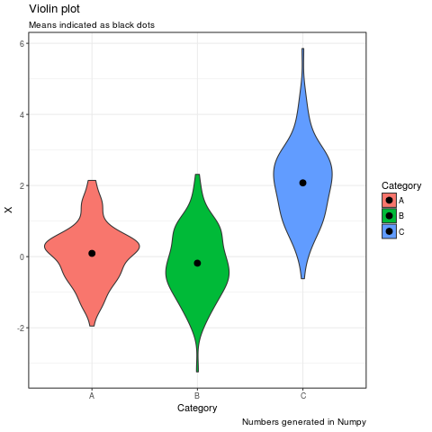

R Magic In Jupyter Notebooks
Apr 3, 2017How to add R code to your (IPython) Jupyter Notebook. The notebook can be accessed from Github.
%load_ext rpy2.ipython
import warnings
warnings.filterwarnings('ignore')
%R require(ggplot2); require(tidyr)
array([1], dtype=int32)
import numpy as np
import pandas as pd
np.random.seed(42)
# Make a pandas DataFrame
df = pd.DataFrame(np.random.normal(0,1,size=(100, 3)), columns=list('ABC'))
df['C'] = df['C'] + 2
%%R -i df
df %>%
gather("Category", "X") %>%
ggplot(aes(x = Category, y = X, fill = Category)) +
geom_violin() +
stat_summary(fun.y=mean, color='black', geom='point', size = 3) +
labs(title = "Violin plot",
subtitle = "Means indicated as black dots",
captions = "Numbers generated in Numpy") +
theme_bw()
